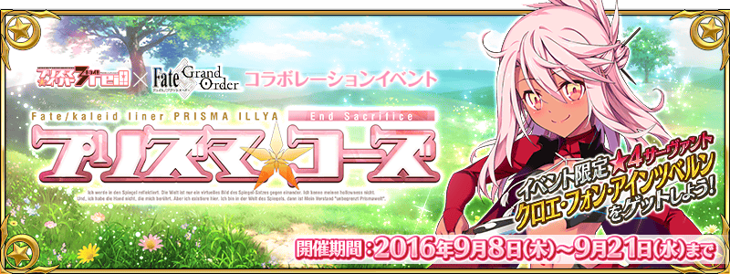
Master醒來的地方，是未曾見過的景色。
那裡是魔法少女治理的魔法國度…！？
受突然跳出來的可疑魔法之杖引導而相遇的少女。
在左看右看都是不可思議的世界，
幫助正在尋找朋友的少女ーー
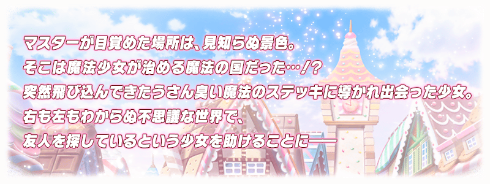
◆活動舉辦時間◆
2016年9月8日(四) 18:00～9月21日(三) 12:59
◆活動概要◆
合作活動「魔法少女紀行 ～プリズマ・コーズ～」舉辦決定！
送上「Fate/kaleid liner 魔法少女☆伊莉雅 3rei!!」的原作者ひろやまひろし監修的原創故事，舉辦特別的活動！
是以魔術少女的世界做為舞台，女性Servant活躍的活動。
來自「Fate/kaleid liner 魔法少女☆伊莉雅 3rei!!」，「克洛伊・馮・愛因茲貝倫」做為活動限定Servant「★4(SR)克洛伊・馮・愛因茲貝倫」登場！
本活動隨著主線關卡的進行，會發生挑戰與強力魔術少女戰鬥的「World End Match」。
打倒魔術少女，推進主線關卡，得到★4(SR)克洛伊・馮・愛因茲貝倫吧！
另外，★4(SR)克洛伊･馮･愛因茲貝倫加入後，自9月14日(三)，預定追加用來提升寶具等級和靈基再臨道具獲得的關卡。
◆活動參加條件◆
只有通過「特異點F 炎上汙染都市 冬木」的Master才能參加
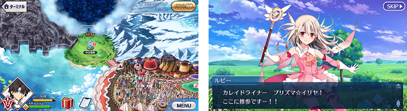
在Fate/Grand Order官方網站內的首頁及展覽室，公開合作活動的TVCM。敬請確認。

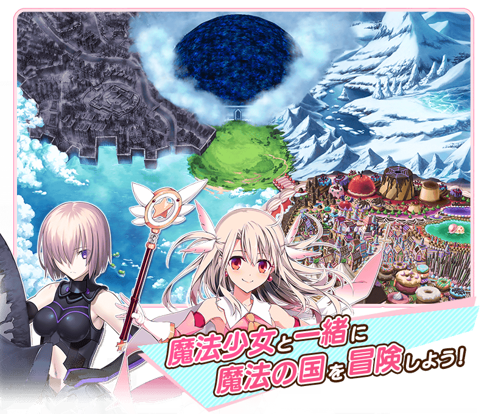
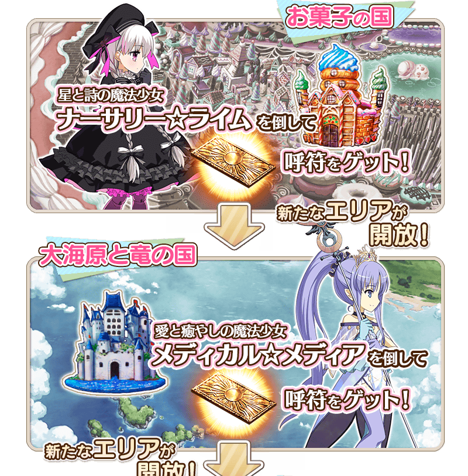
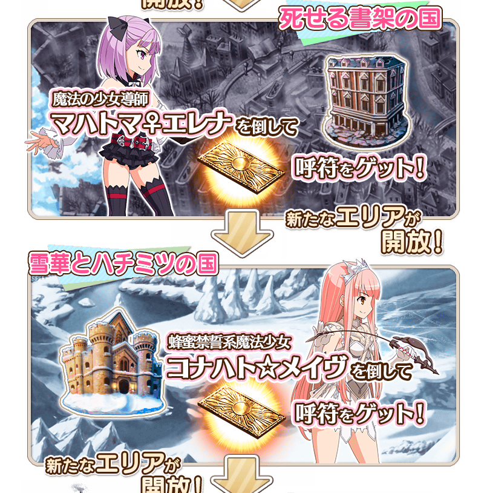
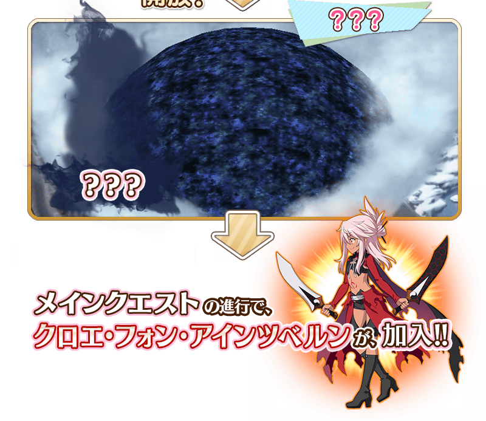
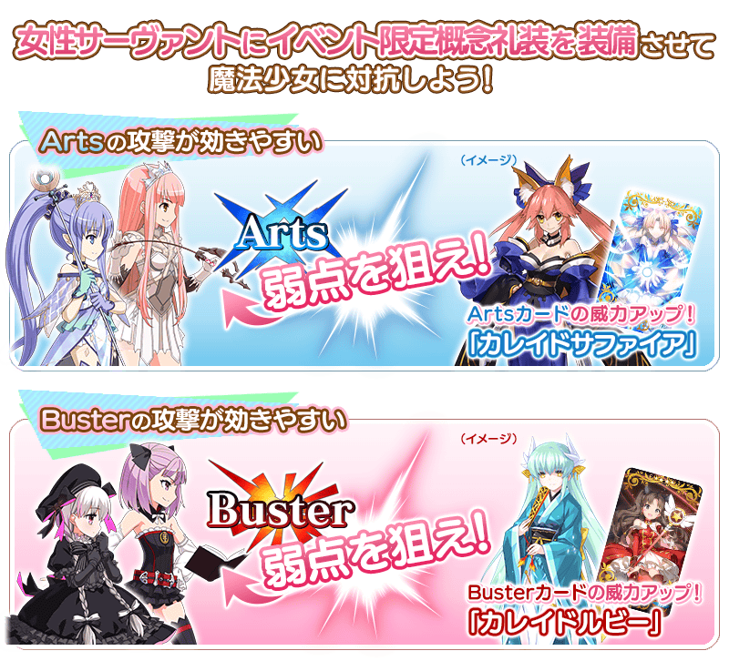
與魔術少女的戰鬥被稱作「World End Match」的特殊形式戰鬥。
魔術少女擁有著與平常的HP不同，靠一次戰鬥無法擊倒的龐大HP(Episode Countdown)。
不斷挑戰戰鬥，減少Episode Countdown吧。
在與魔術少女的戰鬥有回合數限制。
另外，魔術少女隨著Episode Countdown減少，會有攻擊力變高、寶具累積數減少等戰鬥內容變化。
編成隊伍、裝備等設法挑戰World End Match吧！
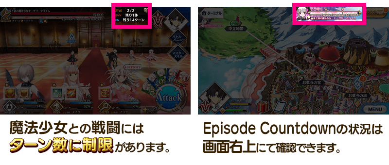
※開發中畫面。
挑戰活動關卡的話，會發生任務！
滿足通過條件達成任務可以獲得豪華報酬。
另外，依照任務的達成數，開放新的關卡和任務。
通過任務，推進活動吧！
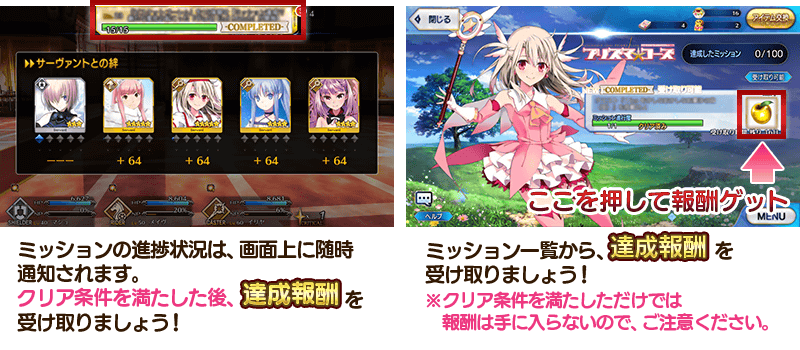
◆超值攻略方法・其1◆
對象Servant在「魔法少女紀行 ～プリズマ・コーズ～」的攻擊威力提升！
【對象Servant】
伊莉雅絲菲爾・馮・愛因茲貝倫、海倫娜・布拉瓦茨基、克洛伊・馮・愛因茲貝倫、女王梅芙、童謠、瑪琇・基利艾拉特、美狄亞〔Lily〕
◆超值攻略方法・其2◆
在本活動中女性Servant能獲得與魔法少女對抗的力量。
女性Servant裝備可以在活動道具交換和關卡報酬、任務報酬入手的活動限定概念禮裝「カレイドルビー」「カレイドサファイア」的話，在「魔法少女紀行 ～プリズマ・コーズ～ 」的攻擊威力提升！
還有在「World End Match」的各指令卡威力提升。
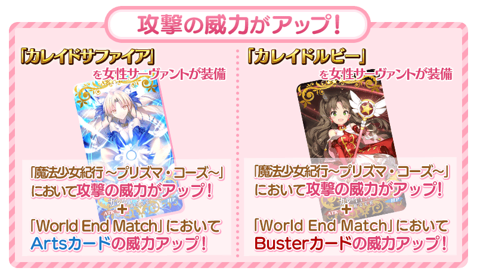
- 【活動限定概念禮裝装備時賦予效果的Servant】
-
職階 稀有度 Servant Saber ★★★★★ 阿爾托莉亞・潘德拉剛 ★★★★★ 阿提拉 ★★★★★ 沖田總司 ★★★★★ 莫德雷德 ★★★★★ 尼祿・克勞狄烏斯〔Bride〕 ★★★★★ 兩儀式 ★★★★ 阿爾托莉亞・潘德拉剛〔Alter〕 ★★★★ 阿爾托莉亞・潘德拉剛〔Lily〕 ★★★★ 尼祿・克勞狄烏斯 ★★★★ 夏爾・德翁 Archer ★★★★★ 阿爾托莉亞・潘德拉剛 ★★★★ 阿塔蘭塔 ★★★★ 織田信長 ★★★★ 安妮・伯妮＆瑪莉・瑞德 ★★★ 尤瑞艾莉 Lancer ★★★★★ 斯卡哈 ★★★★★ 布倫希爾德 ★★★★★ 阿爾托莉亞・潘德拉剛 ★★★★★ 玉藻前 ★★★★ 伊莉莎白・巴托里 ★★★★ 阿爾托莉亞・潘德拉剛〔Alter〕 ★★★★ 清姬 Rider ★★★★★ 弗朗西斯・德雷克 ★★★★★ 女王梅芙 ★★★★ 瑪莉・安東尼 ★★★★ 瑪爾大 ★★★★ 安妮・伯妮＆瑪莉・瑞德 ★★★★ 阿爾托莉亞・潘德拉剛〔聖誕Alter〕 ★★★★ 莫德雷德 ★★★★ 阿斯托爾福 ★★★ 美杜莎 ★★★ 布狄卡 ★★★ 牛若丸 Assassin ★★★★★ 開膛手傑克 ★★★★★ 謎之女主角X ★★★★★ 酒呑童子 ★★★★ 絲西娜 ★★★★ 卡米拉 ★★★★ 兩儀式 ★★★★ 斯卡哈 ★★★ 荊軻 ★★★ 百貌的哈桑 ★★★ 靜謐的哈桑 ★ 瑪塔・哈里 Caster ★★★★★ 玉藻前 ★★★★★ 玄奘三藏 ★★★★★ 李奧納多・達文西 ★★★★ 伊莉莎白・巴托里〔萬聖節〕 ★★★★ 美狄亞〔Lily〕 ★★★★ 童謠 ★★★★ 愛麗絲菲爾〔天之衣〕 ★★★★ 海倫娜・布拉瓦茨基 ★★★★ 尼托克里絲 ★★★★ 瑪莉・安東尼 ★★★ 美狄亞 Berserker ★★★★★ 南丁格爾 ★★★★★ 源頼光 ★★★★ 玉藻貓 ★★★★ 弗蘭肯斯坦 ★★★★ 茨木童子 ★★★ 清姬 Ruler ★★★★★ 貞德 ★★★★ 瑪爾大 Avenger ★★★★★ 貞德〔Alter〕 Shielder ★★★ 瑪琇・基利艾拉特
◆超值攻略方法・其3◆
裝備期間限定概念禮裝的話，活動専用道具「ライオン号くん」「マジカル☆ブシドームサシ」「高級プリン」各自的獲得數提升。
※請注意在各關卡的道具掉落率並非100%。
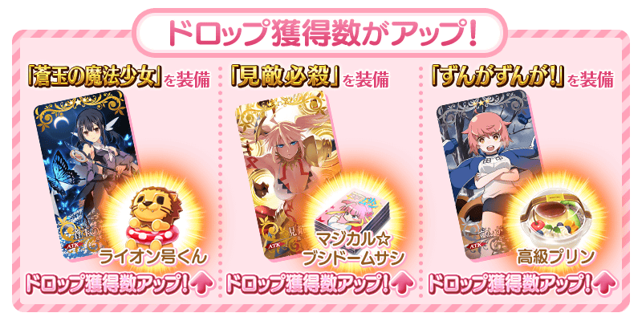
| 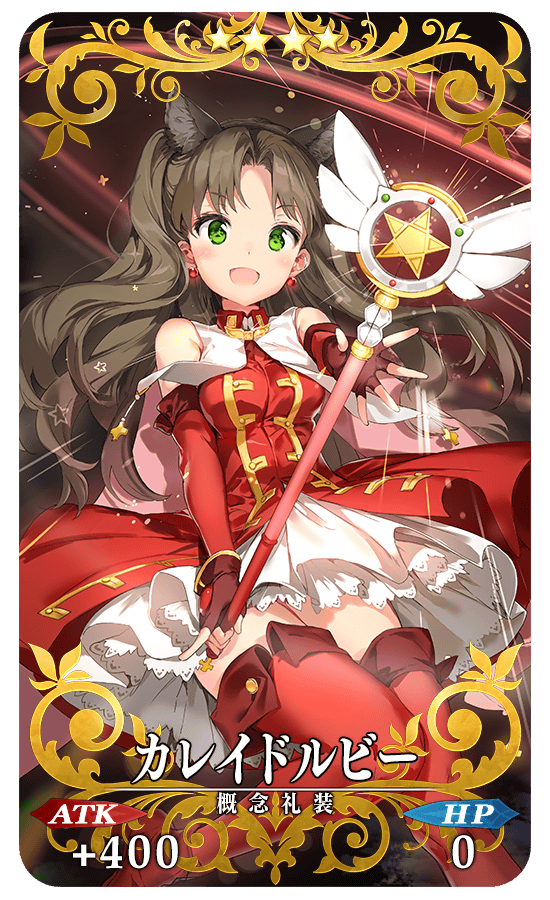 |
★★★★SR |
| 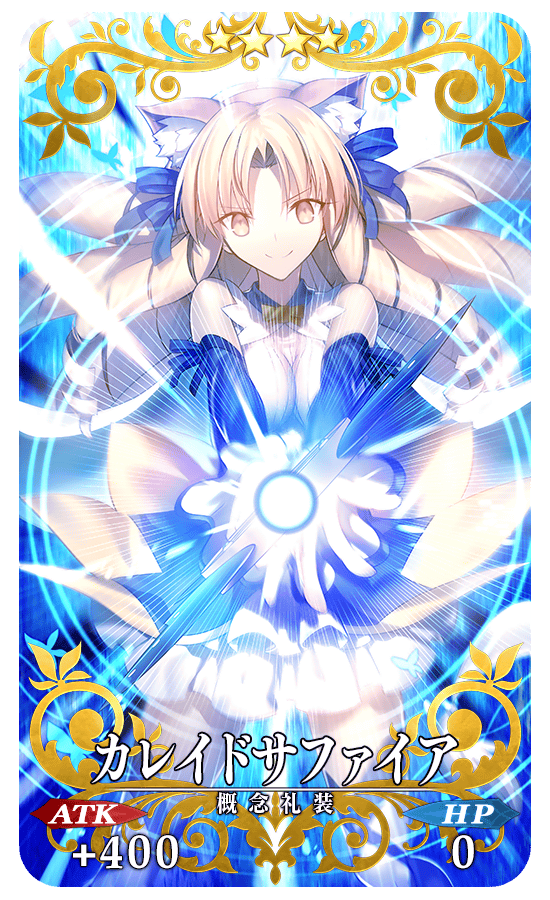 |
★★★★SR |
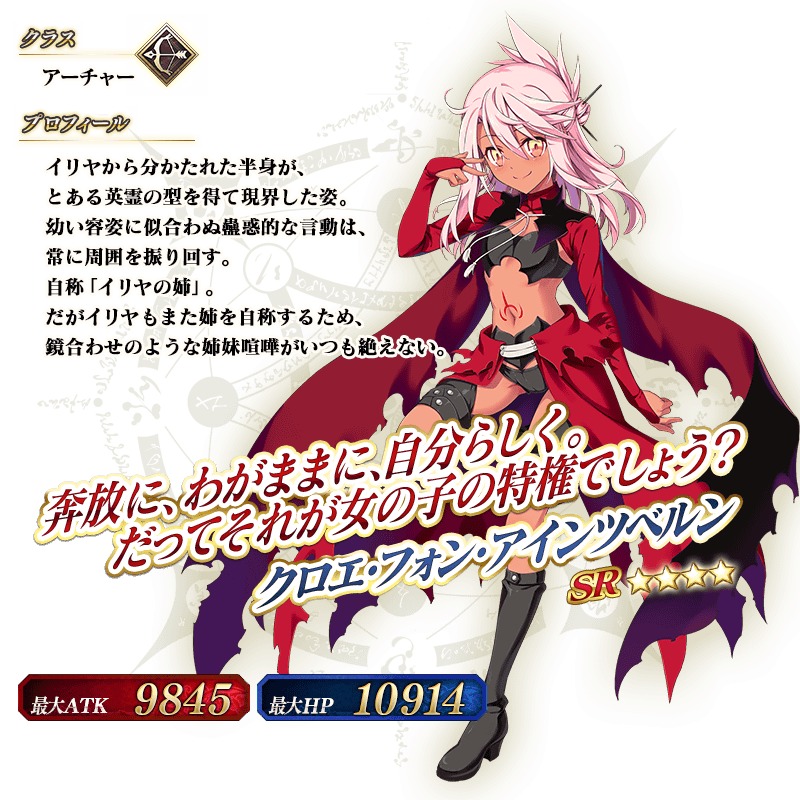
◆靈基再臨◆
使用除任務報酬外無法入手的「ハートのブレスレット」，重複4次靈基再臨的話，卡面會有所變化！
※克洛伊・馮・愛因茲貝倫不會隨靈基再臨使戰鬥角色的外觀變化。
|
◆得到活動期間限定・概念禮裝用EXP卡「マジカルルビー」吧！◆ |
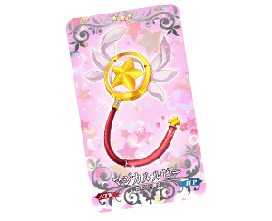 |
◆交換方法◆
交換期間：2016年9月8日(四) 18:00～9月28日(三) 12:59
※(9/14修正)
※交換期間結束後｢ライオン号くん｣｢マジカル☆ブシドームサシ｣｢高級プリン｣會消失。
從達文西工房内的「活動道具交換」，用收集來的活動專用道具來交換以下的道具。
◆能用ライオン号くん交換的道具◆
|
【活動限定概念禮裝】 【技能強化素材、靈基再臨素材】 【靈基再臨素材】 【其他道具】 |
◆能用マジカル☆ブシドームサシ交換的道具◆
| 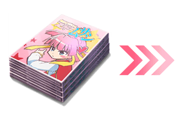 |
【活動限定概念禮裝】 【技能強化素材、靈基再臨素材】 【靈基再臨素材】 【其他道具】 |
◆能用高級プリン交換的道具◆
|
【技能強化素材、靈基再臨素材】 【其他道具】 |

◆「魔法少女紀行 ～プリズマ・コーズ～Pick Up召喚」期間◆
期間：2016年9月8日(四) 18:00～9月21日(三) 12:59
記念合作活動，舉辦期間限定「魔法少女紀行 ～プリズマ・コーズ～Pick Up召喚」！
來自「Fate/kaleid liner 魔法少女☆伊莉雅 3rei!!」的女主角「伊莉雅絲菲爾・馮・愛因茲貝倫」做為Servant「★5(SSR)伊莉雅絲菲爾・馮・愛因茲貝倫」以期間限定登場！
與在活動活躍的Servant「★5(SSR)女王梅芙」以每日交替Pick Up！
另外，期間中「★4（SR）美狄亞〔Lily〕」「★4(SR)童謠」 「★4(SR)海倫娜・布拉瓦茨基」常駐Pick Up！
還有本次，配合活動內容，Servant的召喚只限女性。
詳情請在聖晶石召喚畫面左下的召喚詳細確認。
※伊莉雅絲菲爾・馮・愛因茲貝倫在Pick Up召喚期間結束後，不會追加到故事召喚。
裝備期間限定概念禮裝「★5(SSR)蒼玉の魔法少女」「★4(SR)見敵必殺」「★3(R)ずんがずんが！」的話，活動專用道具的掉落獲得數會提升。
Pick Up 期間中，期間限定Servant、Pick Up Servant、期間限定概念禮裝的出現機率提升！
10次召喚中★4(SR)以上1張確定和★3(R)以上的Servant1位確定！
※★4(SR)以上確定包含Servant和概念禮裝。
※所謂「出現機率UP」意指比同稀有度的Servant及概念禮裝出現機率更高的設定。
| Pick Up日 | 每日交替時間表 |
|---|---|
| 9月8日(四)18:00～ 9月14日(三)12:59 |
伊莉雅絲菲爾・馮・愛因茲貝倫 |
| 9月14日(三)16:00～ 9月15日(四)22:59 |
女王梅芙 |
| 9月15日(四)23:00～ 9月16日(五)22:59 |
伊莉雅絲菲爾・馮・愛因茲貝倫、女王梅芙 |
| 9月16日(五)23:00～ 9月17日(六)22:59 |
女王梅芙 |
| 9月17日(六)23:00～ 9月21日(三)12:59 |
伊莉雅絲菲爾・馮・愛因茲貝倫 |
※請注意每日交替會變更Pick Up的Servant
※關於美狄亞〔Lily〕、童謠、海倫娜・布拉瓦茨基，在此Pick Up期間中，為常駐Pick Up的對象。
※美狄亞〔Lily〕、女王梅芙在Pick Up期間中，就算章節通過前也可以入手。
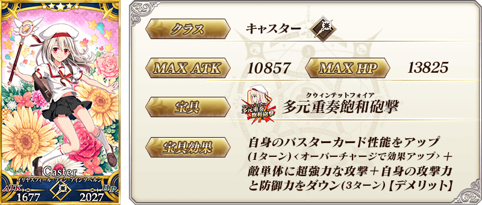
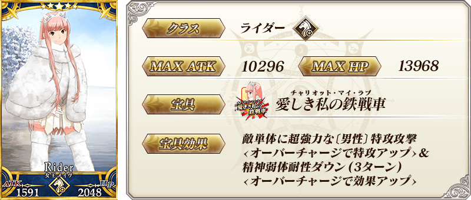
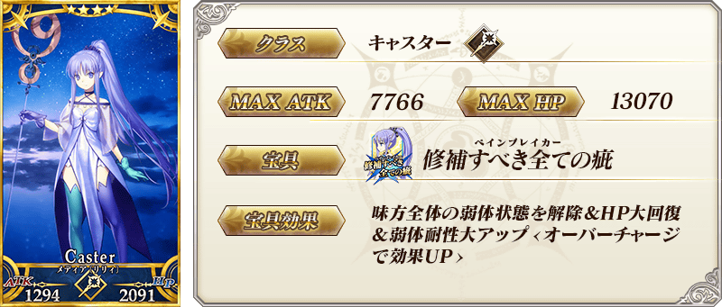

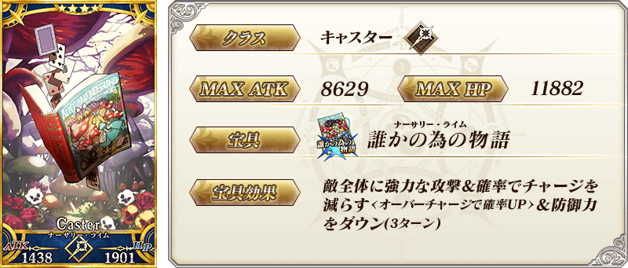

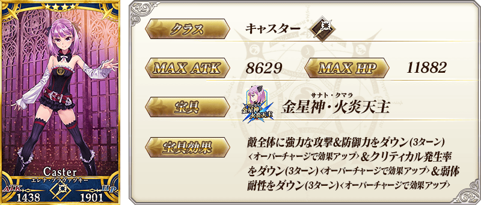
| 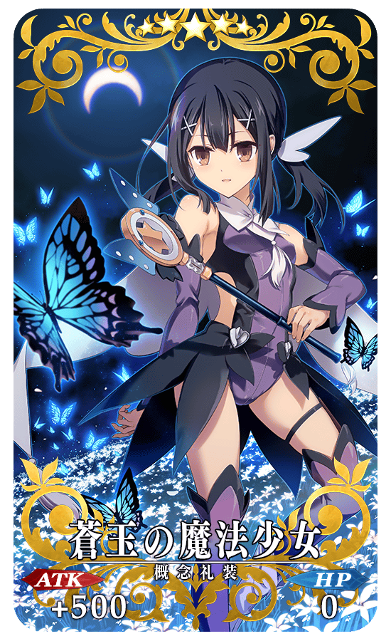 |
★★★★★SSR 蒼玉の魔法少女 ATK 500（最大：2000）HP 0 技能 自身的NP獲得量提升25%＆NP以40%累積狀態開始戰鬥 ＋ ライオン号くん的掉落獲得數增加1個【『魔法少女紀行 ～プリズマ・コーズ～』活動期間限定】 |
| 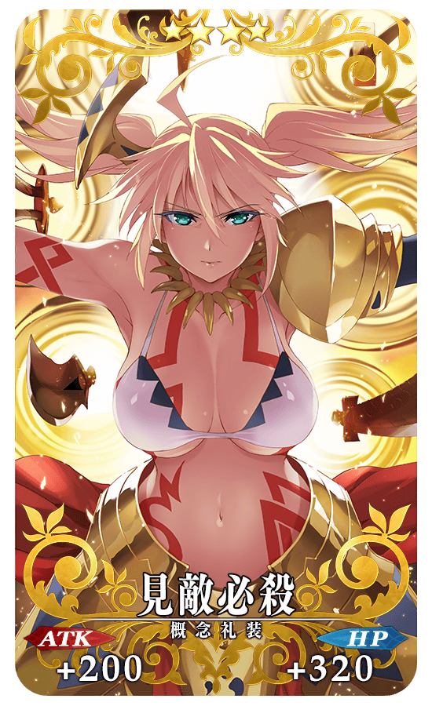 |
★★★★SR 見敵必殺 ATK 200（最大：750） HP 320（最大：1200） 技能 自身的Arts卡性能提升8%＆寶具威力提升15% ＋ マジカル☆ブシドームサシ的掉落獲得數增加1個【『魔法少女紀行 ～プリズマ・コーズ～』活動期間限定】 |
|
★★★R ずんがずんが！ ATK 0 HP 300（最大：1500） 技能 對自身賦予傷害減免100狀態＆HP回復量提升5% ＋ 高級プリン的掉落獲得數增加1個【『魔法少女紀行 ～プリズマ・コーズ～』活動期間限定】 |
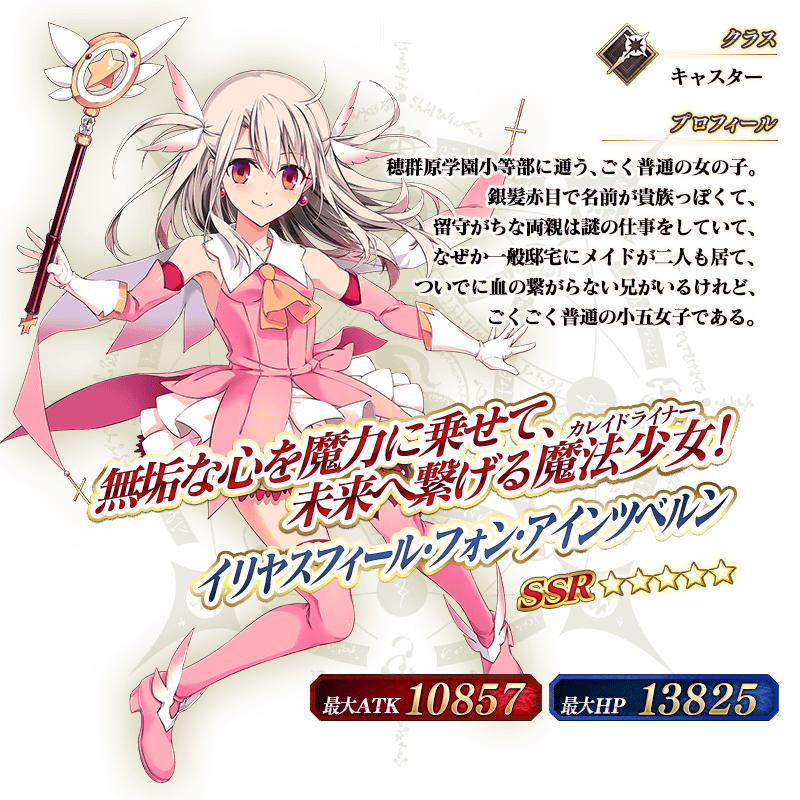